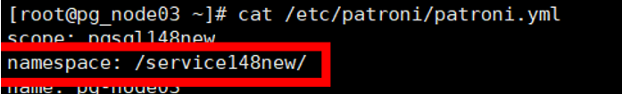

当需要对已备份的PostgreSQL实例进行恢复时，可以参考本节恢复PostgreSQL实例至原位置或新位置。
背景信息
支持使用备份副本、复制副本进行恢复。支持恢复至原位置（复制副本不支持恢复至原位置）或新位置。
前提条件
- 恢复前请确保恢复目标位置的数据目录剩余空间大于恢复副本缩减前大小，否则恢复将失败。
- 执行新位置恢复前，请确保数据库安装用户具有恢复目标路径的读写权限。
- 当恢复的资源为MPP主备集群时，关闭数据库前，请确保主备数据库信息正确，否则需要对恢复目标资源执行资源扫描操作。
- 恢复时如果目标实例的端口被占用，请先解除目标实例占用的端口再执行恢复操作。
- 恢复的目标实例为单实例时，停止数据库，具体操作如下：（/usr/local/pgsql/bin/pg_ctl代表数据库安装目录，/usr/local/pgsql/data代表数据目录，用户需要根据实际安装目录和数据目录，适配停止数据库命令）
su - postgres /usr/local/pgsql/bin/pg_ctl -D /usr/local/pgsql/data -l logfile stop
- 恢复的目标实例为集群实例时，请确保各节点上的服务已停止，先停备库，再停主库，具体操作如下：
pgpool集群
- 先停所有节点pgpool服务：
/usr/local/pgpool/bin/pgpool -m fast stop
- 然后停数据库：
su - postgres /usr/local/pgsql/bin/pg_ctl -D /usr/local/pgsql/data -l logfile stop
patroni集群
- 停所有节点patroni服务，同时会停数据库：
systemctl stop patroni
- 任一节点执行patronictl -c /etc/patroni/patroni.yml list命令，观察节点服务是否已停止。如果回显为空表格，则说明节点服务已停止：

- 执行cat /etc/patroni/patroni.yml命令，查看patroni.yml文件，找到namespace参数项取值。如下图所示：

- 执行etcdctl del --prefix " namespace "命令，删除etcd中关于PostgreSQL集群的数据。
例如：etcdctl del --prefix " /service148new/ "

日志副本恢复至原位置或新位置时，需要提前配置patroni.yml文件，具体配置如下：
method: OceanProtectPITR OceanProtectPITR: command: "mv $PGDATA/../OceanProtectData/DATADIR $PGDATA/../" no_params: True keep_existing_recovery_conf: TrueCLup集群
- 登录CLup数据库管理系统。
- 在“HA集群 > HA管理”找到对应集群，单击“离线”，离线成功后，集群状态为Offline。
- 在“数据库管理 > 实例列表”找到对应的数据库实例，先停备库，再停主库，单击“停止”，停止成功后，数据库实例状态为“停止”。
- 恢复任务完成后，需要对CLup执行上线操作：
在“HA集群 > HA管理”找到对应集群，单击“上线”，上线成功后，集群状态为Online。
HACS
执行恢复操作前，需要先冻结HACS集群，手动执行冻结命令crm configure property maintenance-mode=true，完成冻结后才可以手动停止PostgreSQL数据库，操作如下（停数据库，先停备库、后停主库）：
su - postgres /usr/local/pgsql/bin/pg_ctl -D /usr/local/pgsql/data -l logfile stop
再执行恢复操作，PostgreSQL实例恢复成功后，需要手动执行解冻HACS集群命令crm configure property maintenance-mode=false。
- 先停所有节点pgpool服务：
操作步骤
- 选择“数据利用 > 副本数据 > 数据库 > PostgreSQL”。
- 您可以以PostgreSQL实例资源维度或以副本维度查找副本，本节以资源维度为例进行说明。
在“资源”页签，根据资源名称查找到需要恢复的资源，并单击资源名称。
- 依次选择年、月、天找到副本。
当时间上显示
 ，即表示该月、该天存在副本。
，即表示该月、该天存在副本。 - 指定副本或时间点进行恢复。
相关参数说明如表1。
表1 恢复PostgreSQL实例参数说明 参数
说明
恢复至
选择恢复至“原位置”或“新位置”。
说明：执行新位置恢复时，如果副本中存在数据目录外的表空间目录，需要保证新位置实例安装数据库的操作系统用户可以访问新位置主机上的同名的表空间目录。
标签
当选择恢复至“新位置”时，通过“标签”可以实现快速筛选和管理资源。
位置
当选择恢复至“原位置”时，默认显示当前实例所在位置。
目标主机
当选择恢复至“新位置”时，请选择恢复到的目标主机。
目标实例
当选择恢复至“新位置”时，请选择恢复到的目标实例。
恢复前执行脚本
您可以根据实际需求，在恢复任务执行前、执行成功后、执行失败后，执行自定义脚本。此处请输入脚本的绝对路径。
- Windows OS支持的脚本类型为“.bat”。
- 非Windows OS支持的脚本类型为“.sh”。
说明：
当配置了“恢复成功执行脚本”时，即使该脚本执行失败，本产品上也会显示恢复任务的状态为“成功”。请您留意任务详情中是否有后置脚本执行失败的相关提示，如有请及时修正脚本。
恢复成功执行脚本
恢复失败执行脚本
- 单击“确定”。
对于PostgreSQL CLup集群恢复至新位置的场景，恢复成功后，当原位置对应的集群用户名以及密码和新位置对应的集群用户名以及密码不一致时，需要执行以下操作：
- 登录CLup数据库管理系统界面修改新位置的集群对应的用户名及密码。
- 在“HA集群 > 集群定义”修改新位置的集群对应的“DB中的用户”以及“DB中的密码”和“流复制的用户”以及“流复制的密码”，与原位置对应的集群用户名以及密码保持一致，保存修改。
- 在“HA集群 > HA管理”找到对应集群，单击“上线”，上线成功后，集群状态为Online。
- 登录本产品管理界面修改新位置的集群对应的用户名及密码。
- 选择“保护> 数据库 > PostgreSQL”，在“实例”页签下找到对应恢复的数据库集群实例。
- 修改“数据库用户名”以及“数据库密码”和“数据库流复制用户名”和“数据库流复制用户密码”，与原位置对应的集群用户名以及密码保持一致，修改完成后，实例状态为在线。
- 登录CLup数据库管理系统界面修改新位置的集群对应的用户名及密码。